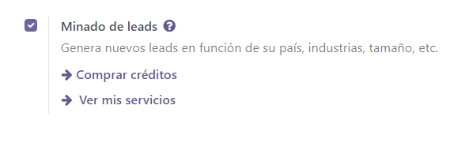
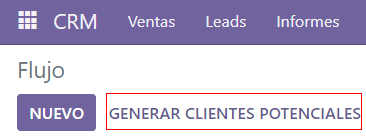
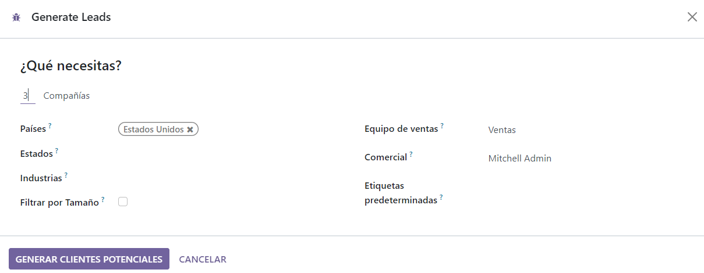
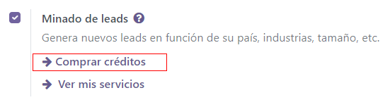
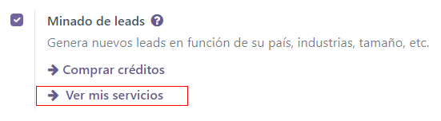

Minado de leads¶
El minado de leads es una función que le permite a los usuarios de CRM generar leads nuevos directamente en su base de datos de Odoo. Para asegurar la calificación de los leads, el resultado del minado de leads se determina según varios criterios de filtro, como país, tamaño de la empresa e industria.
Configuración¶
Para empezar, vaya a y active el Minado de leads.
Generar leads¶
Después de que haya activado la función de minado de leads, tendrá disponible un botón nuevo llamado Generar leads que podrá ver en el flujo de CRM. También puede ver las solicitudes de minado de leads en , o en , aquí también está disponible el botón Generar leads.
Haga clic en el botón Generar leads y aparecerá una ventana donde podrá elegir los diferentes criterios a tomar en cuenta al momento de generar un lead.
Para que la información que obtenga sea solo de la empresa elija Empresas, o elija Empresas y sus contactos para ver información tanto de la empresa como de los empleados de esa empresa. Si elige esta última opción, es posible filtrar los contactos según el puesto o la antigüedad.
Otros filtros incluyen:
Tamaño: filtra leads según el número de empleados de la empresa.
Países: filtra leads según el país (o países) en los que trabaja la empresa.
Estado: si es posible, también filtra leads según el estado en el que se encuentren.
Sectores: filtra leads según el sector en el que trabajan.
Equipo de ventas: escoja a qué equipo de ventas se le asignarán los leads.
Vendedor: escoja a qué persona (o personas) del equipo de ventas se le asignará el lead.
Etiquetas predeterminadas: escoja qué etiquetas se aplicarán de inmediato a los leads una vez que se creen.
Nota
Asegúrese de conocer las normativas más recientes de la UE respecto a la información de sus contactos. Aprenda más sobre el Reglamento General de Protección de Datos en la página de RGPD de Odoo.
Precio¶
El minado de leads es una función que tiene que comprar dentro de la aplicación. Cada lead que se genere cuesta un crédito.
Si elige generar Empresas y sus contactos, gastará un crédito adicional por cada contacto que se genere.
Nota
Revise esta página para obtener la información completa de los precios: Lead Generation by Odoo IAP/Generación de leads en compras dentro de la aplicación de Odoo.
Para comprar créditos, vaya a . En la sección de Generación de leads vaya a la función Minado de leads y haga clic en Comprar créditos.
You can also purchase credits from the «view my services» option, you will be redirected to the same URL.
Nota
Los usuarios de Odoo Enterprise con una suscripción válida obtendrán créditos gratuitos para probar las funciones de compras dentro de la aplicación antes de que decidan comprar más créditos para la base de datos. Esto incluye bases de datos de demostración y capacitación, bases de datos educativas y bases de datos gratuitas de una sola aplicación.
Ver también